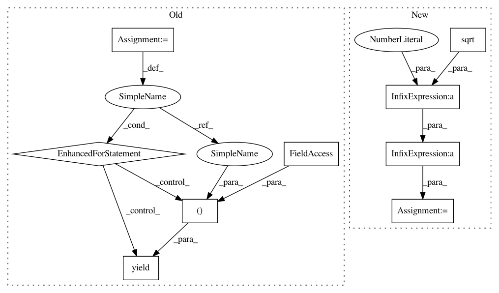

d1f932a01a3a2d73167dea9be55ffae747d1b66b,astroML/stats/tests/test_stats.py,,test_sigmaG,#,90
Before Change
def test_sigmaG():
np.random.seed(0)
a = np.random.random((20, 40, 60))
for axis in [None, 0, 1, 2]:
yield (check_sigmaG, a, axis)
//---------------------------------------------------------------------------
// Check that median_sigmaG() is a good approximation of mean_sigma()
// for normally-distributed data.
def check_median_sigmaG_approx(a, axis, keepdims, atol=0.15):
med, sigmaG = median_sigmaG(a, axis=axis, keepdims=keepdims)
mu, sigma = mean_sigma(a, axis=axis, ddof=1, keepdims=keepdims)
After Change
a = np.random.random((20, 40, 60))
from scipy.special import erfinv
factor = 1. / (2 * np.sqrt(2) * erfinv(0.5))
sigmaG1 = sigmaG(a, axis=axis)
q25, q75 = np.percentile(a, [25, 75], axis=axis)
sigmaG2 = factor * (q75 - q25)
In pattern: SUPERPATTERN
Frequency: 3
Non-data size: 9
Instances
Project Name: astroML/astroML
Commit Name: d1f932a01a3a2d73167dea9be55ffae747d1b66b
Time: 2018-11-30
Author: bsipocz@gmail.com
File Name: astroML/stats/tests/test_stats.py
Class Name:
Method Name: test_sigmaG
Project Name: astroML/astroML
Commit Name: d1f932a01a3a2d73167dea9be55ffae747d1b66b
Time: 2018-11-30
Author: bsipocz@gmail.com
File Name: astroML/stats/tests/test_stats.py
Class Name:
Method Name: test_median_sigmaG
Project Name: astroML/astroML
Commit Name: d1f932a01a3a2d73167dea9be55ffae747d1b66b
Time: 2018-11-30
Author: bsipocz@gmail.com
File Name: astroML/stats/tests/test_stats.py
Class Name:
Method Name: test_sigmaG
Project Name: astroML/astroML
Commit Name: d1f932a01a3a2d73167dea9be55ffae747d1b66b
Time: 2018-11-30
Author: bsipocz@gmail.com
File Name: astroML/stats/tests/test_stats.py
Class Name:
Method Name: test_fit_bivariate_normal